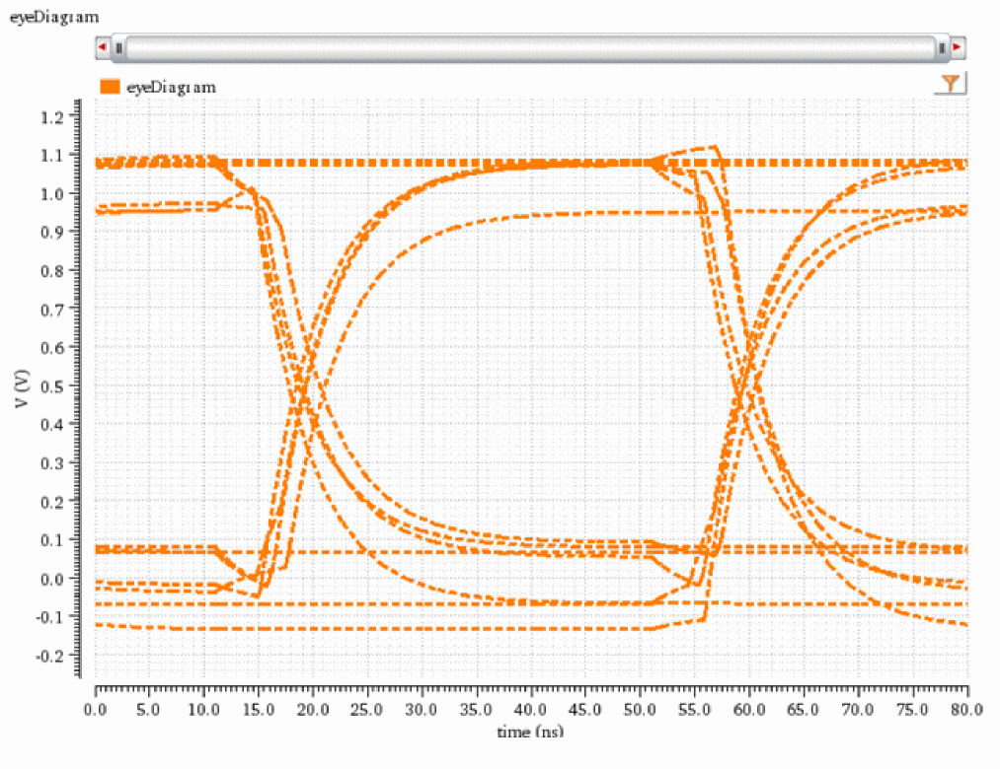
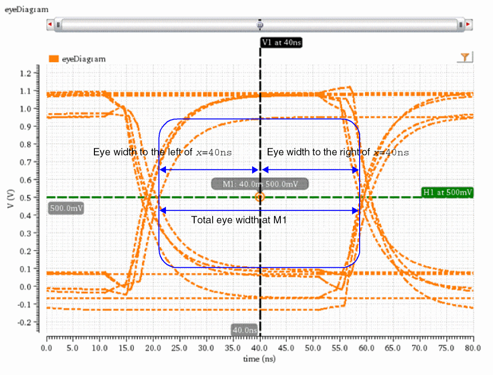
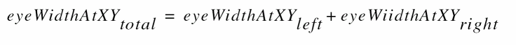

eyeWidthAtXY
eyeWidthAtXY(o_eyeDiagram f_x f_y[ ?outputt_output] ) =>f_eyeWidth/ nil
Description
Calculates the eye width at the specified point (x, y) inside the eye diagram.
Eye width is the difference of two intercepts made with the innermost traces of the eye in the direction of x axis.
Arguments
Value Returned
Examples
The following example calculates the eye width that is left to x=40ns at point M1 (x=40ns, y=0.5).
awvCreatePlotWindow()
;Creates a Waveform window and returns its window ID.
=> window:3
openResults("/servers/user/design/prbs.raw")
;Opens simulation results stored in the specified directory.
=> "/servers/user/design/prbs.raw"
results()
;Lists the results contained in the results directory /servers/user/design/prbs.raw.
=> tran()
selectResult('tran)
;Selects the tran results.
=> stdobj@0x321eab00
eye=eyeDiagram(v("jitter" ?result "tran-tran") 200n 1.4u 2*40n ?autoCenter t )
; Creates a waveform objecteyethat represents an eye diagram created using a signaljitter, which is available in thetranresults of the results directory/servers/user/design/prbs.raw.
=> srrWave:0x364bc030
awvPlotWaveform(
window(3)
list(eye)
?expr list("eyeDiagram")
?color list("y6")
?index list(1)
?lineType list("line")
?lineStyle list("dot")
?lineThickness list("thick")
)
;Plots the eye diagram in the Waveform window that you created using the function awvCreatePlotWindow.
=> t

awvPlaceYMarker(window(3) 0.5 ?label "H1at500mV")
; Places a horizontal marker at y=0.5V (500mV).
=> "horizMarker[1.1.1]"
awvPlaceXMarker(window(3) 40n ?label "V1 at 40ns")
;Places a vertical marker at x=40ns.
=> "vertMarker[1.1.1]"
awvPlacePointMarker(window(3) 1 40n 500m ?positionMode "xy")
;Places a point marker M1 at x=40ns and y=500mV.
=> "pointMarker[1.1.1]"

eyeWidthAtXY(eye 40n 0.5 ?output "total")
; Calculates the total eye width of eye diagrameyeat pointM1whose x-axis and y-axis coordinates are40nsand0.5, respectively.
=> 3.754902e-08
eyeWidthAtXY(eye 40n 0.5 ?output "right")
; Calculates the eye width that is right to x=40nsat pointM1(x=40ns, y=0.5).
=> 1.868346e-08
eyeWidthAtXY(eye 40n 0.5 ?output "left")
;Calculates the eye width that is left to x=40nsat pointM1(x=40ns, y=0.5).
=> 1.886556e-08
Note that total eye width at any point inside the eye diagram is equal to the sum of eye widths to the left and to the right of that point.

Return to top